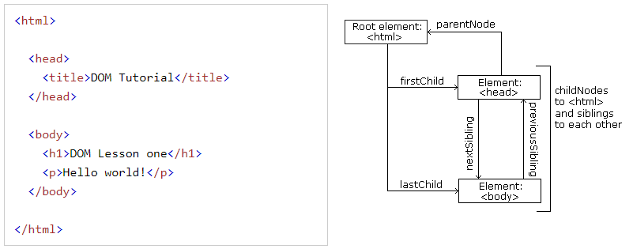

HTML DOM을 사용하면 노드 관계를 사용하여 노트 트리를 탐색할 수 있습니다.
HTML DOM을 사용하면 노드트리의 모든 노드에 JavaScript로 접근할 수 있습니다.
새 노드를 만들 수 있으며 모든 노드를 수정하거나 삭제할 수 있습니다.
노드 트리의 노드는 서로 계층 관계를 갖습니다.
상위, 하위 및 형제라는 용어는 관계를 설명하는데 사용됩니다.

위의 HTML에서 다음을 읽을 수 있습니다.
그리고
다음 노드 특성을 사용하여 JavaScript로 노드 사이를 탐색할 수 있습니다.
DOM 처리의 일반적인 오류는 요소 노드에 텍스트가 포함될 것으로 예상되는 것입니다.
< title id="demo" >DOM Tutorial < /title >
요소 노드 title에는 텍스트가 들어 있지 않습니다.
여기에는 "DOM Tutorial"값이 있는 text node가 있습니다.
텍스트 노드의 값은 노드의 innerHTML 속성을 통해 액세스 할 수 있습니다.
var myTitle = document.getElementById("demo").innerHTML;
innerHTML 속성은 접근하는 것은 첫 번째 자식의 nodeValue에 접근하는 것과 같습니다.
var myTitle = document.getElementById("demo").firstChild.nodeValue;
첫 번쨰 자식에 대한 접근은 다음과 같습니다.
var myTitle = document.getElementById("demo").childNodes[0].nodeValue;
다음 3번의 모든 예제는 h1요소의 텍스트를 가져와서 p 요소에 복사합니다.
My First Page
document.getElementById("id02").innerHTML = document.getElementById("id01").innerHTML;
이 자습서에는 innerHTML 속성을 사용하여 HTML요소의 내용을 검색합니다.
그러나 위의 다른 방법을 배우는 것은 트리구조와 DOM 탐색을 이해하는 데 유용합니다.
전체 문서에 대한 접근을 허용하는 두가지 특수 속성이 있습니다.
console.log(document.body.innerHTML);
console.log(document.documentElement.innerHTML);
nodeName 특성은 노드의 이름을 지정합니다.
document.getElementById("id03").innerHTML = document.getElementById("id04").nodeName;
tip: nodeName은 항상 HTML 요소의 대문자 태그 이름을 포함합니다.
nodeValue 등록 정보는 노드 값을 지정합니다.
nodeType 등록정보는 읽기 전용입니다. 노드의 유형을 리턴합니다.
document.getElementById("id02").innerHTML = document.getElementById("id01").nodeType;